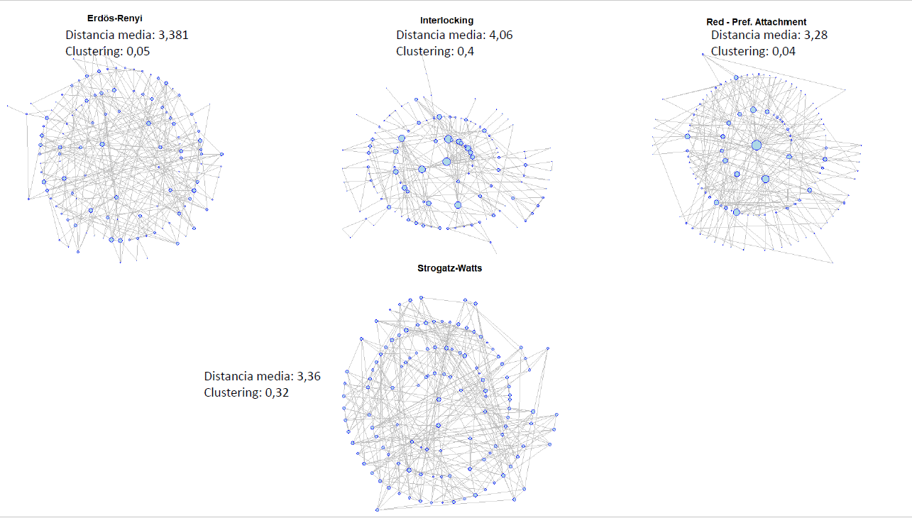
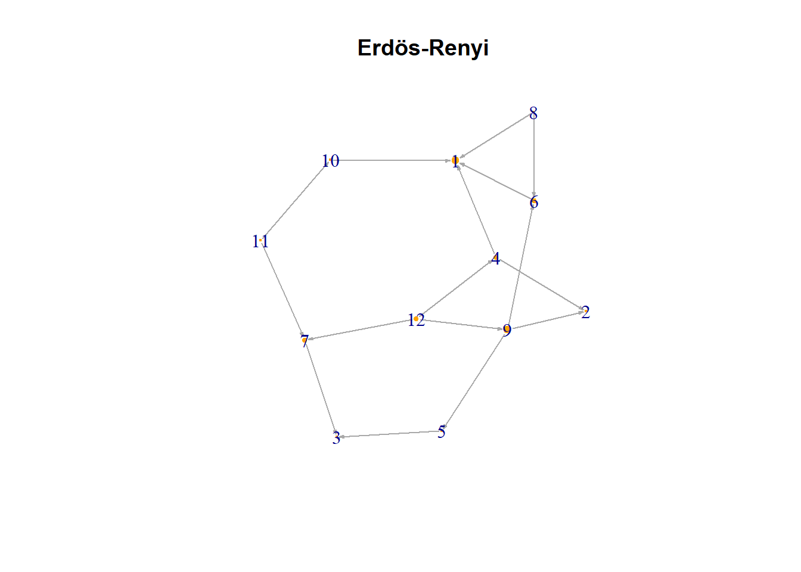
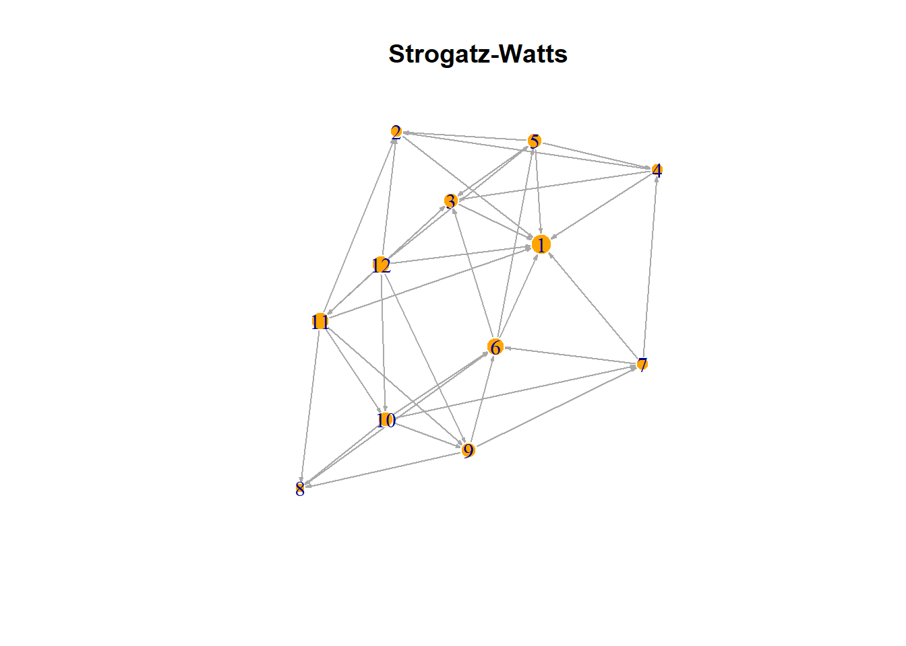
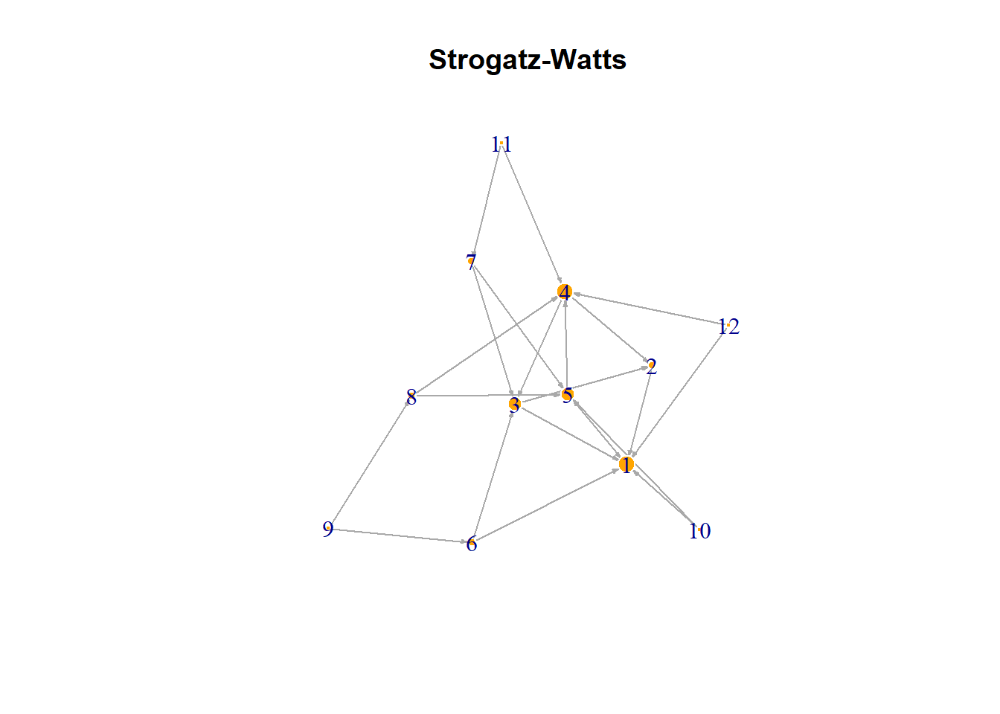

library(igraph)
library(dplyr)3 Formación de redes: modelos de generación de redes aleatorias
3.1 Modelos Nulos
Además de describir una red, usualmente nos interesa conocer los fenómenos que explican la formación de la estructura específica de una red. Para esto se ocupan los “Modelos Nulos” que son redes formadas de manera aleatoria que preservan alguna propiedad de la red que se quiere estudiar. Luego, se comparan métricas descriptivas de la red sintética con las métricas de la red que estamos estudiando.
Con esta metodología se intenta buscar las variables más relevantes o los mecanismos que explican su formación.
Hay diversos algoritmos para la creación de un modelo nulo. Uno de los más simples es Erdös Renyi, donde la probabiblidad es igual para cada enlace. En la vida real los niveles de clusterización son generalmente mayores a los observados en las redes aleatorias de Erdos Renyi y tampoco existen hubs en este tipo de redes (hubs: pocos nodos en la red con un grado muy alto).
Para generar redes aleatorias con una distribución de grado específica, encontramos en la literatura metodologías denominadas General Random Graph Models.
Por ejemplo, una teoría de la formación de redes es el fenómeno de “mundo pequeño” (Strogats-Watts models), en que la distancia promedio de los nodos es pequeña y no cambia aunque se agreguen nuevos nodos a la red. Por ejemplo: los 6 grados de separación promedio entre 2 personas cualquiera del planeta.
Otra teoría de formación de redes es la del “preferencial atachment” o tambien llamadas “redes libres de escala”, que se basan en que la probabilidad de generar un enlace es mayor con nodos que tienen mayor grado, en estas redes aparecen naturalmente hubs.
En la siguiente figura vemos la red real Interlocking y redes sintéticas generadas por diferentes algoritmos:

Generemos algunos modelos nulos para nuestro ejemplo:
3.2 Librerías
3.3 Base de Datos
Cargamos los datos del archivo de texto, que contiene una columna con los nodos emisores, otra con los nodos receptores y otra columna con el atributo “n” de cada enlace.
links <- read.csv("datos/movements.csv", header=T, as.is=T)
head(links) source target n
1 ward_1 ward_2 10
2 ward_1 ward_3 50
3 ward_1 ward_4 80
4 ward_2 ward_1 50
5 ward_2 ward_3 80
6 ward_2 ward_4 10# Convirtiendo los datos a un objeto de igraph:
net <- graph_from_data_frame(links, directed=T) 3.3.1 Erdos-Renyi:
######## veamos la versi?n Erdos-Renyi de nuestra red ########
# erdos.renyi.game(n, p.or.m, type = c("gnp", "gnm"), directed = FALSE, loops = FALSE, ...)
# n: The number of vertices in the graph.
# p.or.m: Either the probability for drawing an edge between two arbitrary vertices (G(n,p) graph), or the number of edges in the graph (for G(n,m) graphs).
# type: The type of the random graph to create, either gnp (G(n,p) graph) or gnm (G(n,m) graph).
# directed: Logical, whether the graph will be directed, defaults to FALSE.
# loops: Logical, whether to add loop edges, defaults to FALSE.
size <- length(V(net))
dens <- graph.density(net) # probabilidad de un link
er <- erdos.renyi.game(size, dens)
er.grado <- degree(er)
er.distancia <- round(mean_distance(er),3)
er.clustering <- round(transitivity(er, type="global"),3)
V(er)$size <- er.grado*1.5
V(er)$frame.color <- "white"
V(er)$color <- "orange"
V(er)$label <- V(net)
E(er)$arrow.mode <- 1
E(er)$arrow.size <- 0.2
l <- layout_with_fr(er)
plot(er, main="Erdös-Renyi", layout=l)
print("Erdos-Renyi")[1] "Erdos-Renyi"mean(er.grado)[1] 2.666667er.distancia[1] 2.212er.clustering[1] 0.1print("Red real")[1] "Red real"net.degree<-degree(net)
net.distancia <- round(mean_distance(net),3)
net.clustering <- round(transitivity(net, type="global"),3)
mean(net.degree)[1] 5.833333net.distancia[1] 2.614net.clustering[1] 0.6733.3.2 Strogats-Watts (mundo pequeño):
######## veamos la versi?n Strogatz-Watts de nuestra red ######## MUNDOS PEQUE?OS
# sample_smallworld(dim, size, nei, p, loops = FALSE, multiple = FALSE)
# dim: Integer constant, the dimension of the starting lattice.
# size: Integer constant, the size of the lattice along each dimension.
# nei: Integer constant, the neighborhood within which the vertices of the lattice will be connected.
# p: Real constant between zero and one, the rewiring probability.
# loops: Logical scalar, whether loops edges are allowed in the generated graph.
# multiple: Logical scalar, whether multiple edges are allowed int the generated graph.
# parametros: tama?o (size), minima cantidad de conexiones (3 - triada), rewiring (0.1) pq se parte de una red regular
sm <- watts.strogatz.game(1,size,3,0.1) # estoy asumiendo vecindarios de 3 nodos y rewiring de 0.1 (se puede mejorar la precisión)
sm.grado <- degree(sm)
V(sm)$size <- sm.grado*1.5
V(sm)$frame.color <- "white"
V(sm)$color <- "orange"
V(sm)$label <- V(net)
E(sm)$arrow.mode <- 1
E(sm)$arrow.size <- 0.2
l <- layout_with_fr(sm)
plot(sm, main="Strogatz-Watts", layout=l)
sm.distancia <- round(mean_distance(sm),3)
sm.clustering <- round(transitivity(sm, type="global"),3)3.3.3 Barabasi (libre de escala):
######## veamos la version Barabasi de nuestra red ########
# sample_pa(n, power = 1, m = NULL, out.dist = NULL, out.seq = NULL,
# out.pref = FALSE, zero.appeal = 1, directed = TRUE,
# algorithm = c("psumtree", "psumtree-multiple", "bag"),
# start.graph = NULL)
# n; Number of vertices.
# power: The power of the preferential attachment, the default is one, ie. linear
# m: Numeric constant, the number of edges to add in each time step.
# out.dist: Numeric vector, the distribution of the number of edges to add in each time step. This argument is only used if the out.seq argument is omitted or NULL.
# out.seq: Numeric vector giving the number of edges to add in each time step. Its first element is ignored as no edges are added in the first time step.
# out.pref: Logical, if true the total degree is used for calculating the citation probability, otherwise the in-degree is used.
# zero.appeal: The 'attractiveness' of the vertices with no adjacent edges. See details below.
# directed: Whether to create a directed graph.
# algorithm: The algorithm to use for the graph generation.
# start.graph: ... If a graph, then the supplied graph is used as a starting graph for the preferential attachment algorithm.
pa <- barabasi.game(size,power=1, m=2, directed=F, algorithm="psumtree")
pa.grado <- degree(pa)
V(pa)$size <- pa.grado*1.5
V(pa)$frame.color <- "white"
V(pa)$color <- "orange"
V(pa)$label <- V(net)
E(pa)$arrow.mode <- 1
E(pa)$arrow.size <- 0.2
l <- layout_with_fr(pa)
plot(pa, main="Strogatz-Watts", layout=l)
pa.distancia <- round(mean_distance(pa),3)
pa.clustering <- round(transitivity(pa, type="global"),3)3.3.4 Comparación
Comparemos los 3 modelos nulos con la red real:
resumen <- matrix(c(net.distancia,net.clustering,
er.distancia, er.clustering,
sm.distancia,sm.clustering,
pa.distancia,pa.clustering),
nrow=2,ncol=4,byrow=F)
rownames(resumen) <- c("distancia","clustering")
colnames(resumen) <- c("Real","ER","SW","PA")
resumen Real ER SW PA
distancia 2.614 2.212 1.470 1.818
clustering 0.673 0.100 0.561 0.227